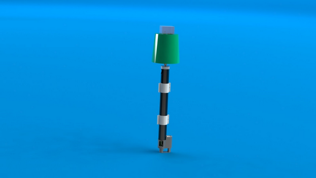

2023 - 2024
The Project
Wave Energy Converter
The intent with the team's project was to create a wave energy converter that could be mounted to existing foundations to develop an established grid. The main target is existing offshore wind farms, which are already dedicated areas for harvesting wind energy. Adding WECs to these systems could make the area more energy-efficient.
The team is prototyping a WEC with a modular mounting system that will be able to anchor itself on a number of different foundations, thereby developing energy harvesting in those areas.
CAD Images



The Goal
Prototype
For the prototype, the team hopes to create a working scale model that proves the original concept. The team is working to ensure that the design is calculated and repeatable for future use and innovation.
Market Sector
This prototype must be efficient, cost-effective, and reliable in order to be used in isolated communities.
Competition
The team is aiming for Rookie of the Year.
To be continued...